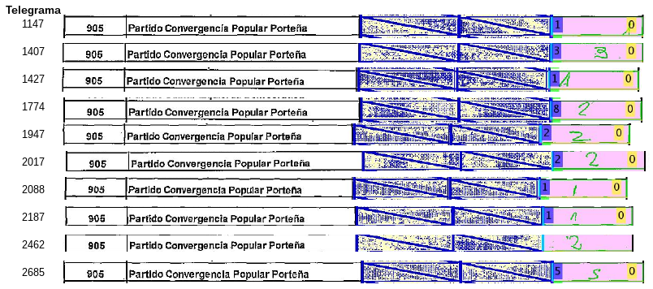

¿ Porqué en el 2013 el partido político Convergencia Popular Porteña obtuvo 0 votos ?
El 27 de Octubre del 2013 en Argentina tuvieron lugar las elecciones legislativas. En Buenos Aires,
Capital Federal hubo un partido político que se dijo que obtuvo 0 votos.
A pesar de la repercusión mediática, esto es estadísticamente hablando muy raro. Sin necesidad de hacer cuentas,
aunque sea por error ó por no saber a quién votar, es muy extraño que no reciba un solo voto.

En amarillo el dato tipeado, en azul el dígito reconocido
por una red neuronal convolucional (ConvNet).
Aqui se observan los pocos (pero no nulos) votos de Convergencia Popular Porteña. Por algún motivo en el
set de datos oficiál de Datos Abiertos de Gobierno el partido ha sido eliminado (Lista 905).
Este trabajo muestra tres cosas:
- Que tras los datos hay una historia y una posible investigación
- La importancia de que los datos transcriptos estén acompañados por los datos manuscritos
- El peligro del voto electrónico
Datos, datos datos!
Datos tipeados de resultados elecciones legislativas Argentina 2013